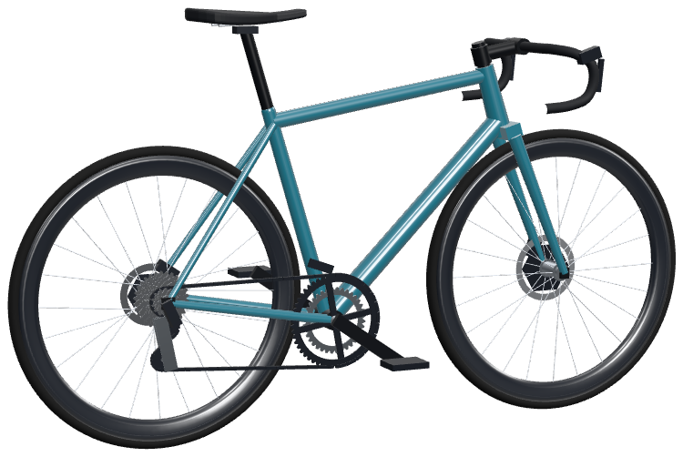

Scroll and the bike builds itself from its size-56 geometry chart, part by part, each tube placed to the millimetre.
| Head angle | 73.5° |
| Stack / reach | 555 / 398 mm |
| Tyres | 26-622 |
700c rims on a 622 mm bead seat, 24 spokes each: radial at the front, two-cross at the rear, where the pedalling torque goes.
| Bead seat | 622 mm |
| Spokes | 24 front, 24 rear |
| Rotors | 160 / 140 mm |